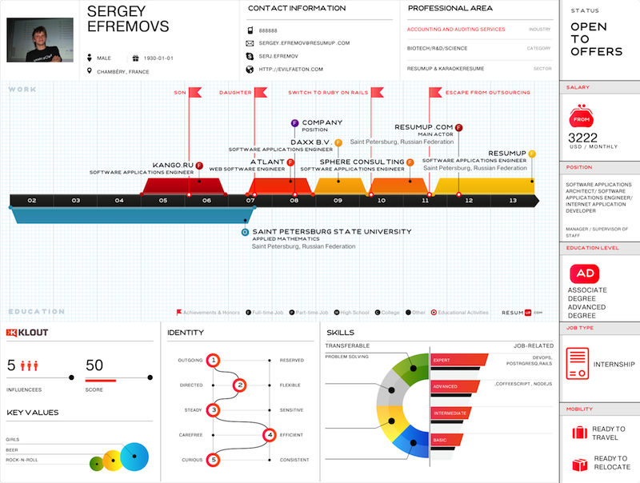
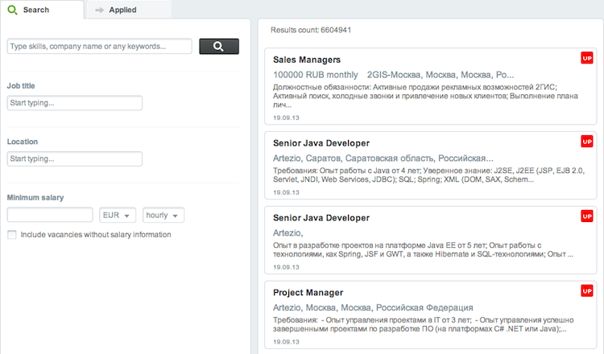

CoffeeScript
with(out) sugar
Created by Sergey Efremov / @evilfaeton
ResumUP
Better Career Decision.
Profile Visualization
Career Planing

Vacancy Search
Why Javascript
- SVG
- Browser
- LEGACY
Draw SVG in browser
Cache Every ####### Detail
- Mongo — rocks
- Cache invalidation — sucks
- Raphael — ...
Serverside: Episode I
- therubyracer & nodejs
- jsdom & Raphael
Serverside: Strikes back
- Baileys and Absinthe
- Node.js / Assets pipeline and Tetris
- Redis & Danthes (Faye)
Javascript ?

Ugly syntax
- Braces
- Semicolon
WATMAN
Wat by Destroyallsoftware

Contra
- No Stdlib
- Prototype based
- Work with global context (strict!)
And again
Braces & Semicolon
Pro
- Async
- Event oriented
- Community
- Fast & Furoius (V8)
JavaScript is a new Java
Write once, run everywhere
- Browsers
- Node.js
Why coffeescript?
It's coffee, everyone love coffee
Because of Rails
Thanks to DHH. Ruby Drama
It's all about sugar
#Coffeescript
a = (test) ->
for t in test
t.toUpperCase() unless t?
#Javascript
var a;
a = function(test) {
var t, _i, _len, _results;
_results = [];
for (_i = 0, _len = test.length; _i < _len; _i++) {
t = test[_i];
if (t == null) {
_results.push(t.toUpperCase());
} else {
_results.push(void 0);
}
}
return _results;
};
Classes & Context
class A
constructor: ->
@options =
twitter: 'ok'
lead: (b) ->
jQuery.drop( (event, ui) =>
console.log @options
)
class B extends A
lead: (a, b) ->
console.log "Ok"
JavaScript ?
var A, B,
__hasProp = {}.hasOwnProperty,
__extends = function(child, parent) { for (var key in parent) { if (__hasProp.call(parent, key)) child[key] = parent[key]; } function ctor() { this.constructor = child; } ctor.prototype = parent.prototype; child.prototype = new ctor(); child.__super__ = parent.prototype; return child; };
A = (function() {
function A() {
this.options = {
twitter: 'ok'
};
}
A.prototype.lead = function(b) {
var _this = this;
return jQuery.drop(function(event, ui) {
return console.log(_this.options);
});
};
return A;
})();
B = (function(_super) {
__extends(B, _super);
function B() {
return B.__super__.constructor.apply(this, arguments);
}
B.prototype.lead = function(a, b) {
return console.log("Ok");
};
Sugar, Sugar, Sugar
- iterators
- if / unless
- oneliners
- lambda
- classes
- closures
Contra
- I don't know it
- Preproccesing & Compiling
- Debugging
- Complex code
I don't know it
Still Javascript...but with Ruby/Python
# Assignment:
number = 42
opposite = true
# Conditions:
number = -42 if opposite
# Functions:
square = (x) -> x * x
# Arrays:
list = [1, 2, 3, 4, 5]
# Objects:
math =
root: Math.sqrt
square: square
cube: (x) -> x * square x
# Splats:
race = (winner, runners...) ->
print winner, runners
# Existence:
alert "I knew it!" if elvis?
# Array comprehensions:
cubes = (math.cube num for num in list)
Preproccesing & Compiling

Frameworks, Templating — that's not our work
Sprokets
Debugging
- Tests
- Source maps
- Minimalize
Complex Code
- You should know Javascript
- Sugar is good, but not enough
bind = (ctrl) => -> ctrl.updateScrollbar() if ctrl.updateScrollbar
Why We use Coffeescript
Just for fun
And it's more simple — write less do more
jQuery isn't about it
Conclusion
Thanks
Q & A
OOCSS
CSS with spices
Created by Ekaterina Bulatova / @KathieKiwi